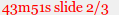

AsciiDoc 可以用來製作投影片，只要採用 slidy backend 即可，背後用的正是 W3C HTML Slidy。
HTML Slidy 是用 HTML + JavaScript + CSS 來製作投影片，純文字適合做版本控制的好處當然少不了，但過程中需要面對複雜的 HTML tags 也滿累人的。透過 AsciiDoc 來做轉換，就可以專注在投影片內容的撰寫，也不用操煩字體、大小、樣式等。
Slide.txt= 投影片標題 =  Jeremy Kao <imsardine@gmail.com>
v1.0, 5 Nov. 2011
Jeremy Kao <imsardine@gmail.com>
v1.0, 5 Nov. 2011  :duration: 45
:duration: 45  :data-uri:
:data-uri:  :icons:
:source-highlighter: pygments
:icons:
:source-highlighter: pygments
 == 第一張的標題 ==
== 第一張的標題 ==  [role="incremental"]
[role="incremental"]  * Item 1
* Item 2
* ...
== 第二張的標題 ==
[source,java]
* Item 1
* Item 2
* ...
== 第二張的標題 ==
[source,java]  --------------------------------------------------------------------------------
public class java {
public static void main(String[] args) {
System.out.println("Hello World");
}
}
--------------------------------------------------------------------------------
== 第三張的標題 ==
...
--------------------------------------------------------------------------------
public class java {
public static void main(String[] args) {
System.out.println("Hello World");
}
}
--------------------------------------------------------------------------------
== 第三張的標題 ==
...| Document header 會成為投影片的封面。 | |
| 版本修訂的資訊。這裡並不適合寫上 revision mark，因為會被顯示在投影片的封面。 | |
duration 設定投影片要花多少分鐘，畫面右下方就會出現倒數時計，像是

。
| |
原來就會將 CSS 跟 JavaScript 內嵌在 HTML 裡，宣告 data-url 更會將圖片也一併內嵌，方便跟他人分享。
| |
| 如果這裡有其他內容，會顯示在下一張投影片，並不會成為封面的一部份。 | |
| 接下來所有的 level-1 titles 都會各成一張投影片。 | |
將清單的 role attribute 設定成 incremental，底下的項目會逐項顯示出來。
| |
Syntax highlighting 也可以作用，採用 Pygments 做為 highlighter 時，外部的 pygments.css 也會內嵌到 HTML 裡。
|
之後執行：
asciidoc -b slidy Slide.txt就會產生 Slide.html。
字體會自動依視窗大小做調整，但還是可以手動調整：
-
放大字體 - +、> 或 B (bigger)。
-
縮小字體 - -、< 或 S (smaller)。
切換投影片的方式有：
-
回到封面 - Home。
-
到最後一張 - End。
-
下一張 - 滑鼠左鍵（可以用 K 切換這個功能）、空白鍵、右方向鍵、Page Down。
-
上一張 - 左方向鍵、Page Up。（滑鼠右鍵會叫出瀏覽器的選單）
|
|
嚴格來說，Page Up/Down 跟其他鍵盤或滑鼠的操作是有些不同的。當投影片有用到上面 incremental 的效果時，只有 Page Up/Down 才能略過逐項顯示的效果，快速地在不同張投影片之間切換，其他的操作都只是 "上一步" 或 "下一步" 而已。 |
其他的快捷鍵有：
-
A - 切換一次顯示一個／全部投影片，後者方便印出。
-
K - 啟用／停用按滑鼠會切換到下一張的功能。如果想用滑鼠做選取的動作，就必須將這個功能停用才行。
-
F11 - 切換全螢幕。
-
C - 叫出 TOC 的選單，方便快速切換到其他張。
-
F - 顯視／隱藏畫面下方的頁尾。